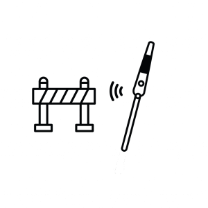

Portador de deficiência visual
A visão é muito importante para o relacionamento do ser humano com o mundo, pois ela registra informações no cérebro, organizando diversas funções, como calcular um trajeto, saber onde passará e para onde irá, que rua virar e etc.
A visão tem diversos estados, sendo a visão perfeita até a cegueira total, quando alguém é portador de deficiência visual, essa pessoa tem um espectro que vai da visão subnormal até a cegueira. (PORTAL MEC, 03/05/2021)
Define-se como portadora de deficiência visual, uma pessoa que não consegue usar a vista como principal meio de aprendizado, ou seja, quando se possui dificuldade de aprendizagem por possuir algum defeito visual. (PORTAL WEB, 05/05/2021)
Cegueira absoluta
A cegueira tem um efeito muito grave na limitação na orientação e mobilidade do portador. Onde o desenvolvimento do portador deve ser desde cedo, estimulando e orientando o cego no âmbito social. Existem programas, feitos pelas escolas, onde os sentidos de orientação são melhorados, o tato, audição e olfato, por meio de interações com objetos que estão em vários ambientes.
A família é de extrema importância no desenvolvimento do cego, pois a família está no cotidiano, e ela terá o papel de mostrar que mesmo tendo a cegueira, o portador é uma pessoa e não se deve focar em sua cegueira ou baixa capacidade visual. (PORTAL MEC, 2021)
A inclusão social do cego, é uma grande conquista, hoje em dia os indivíduos com cegueira, compartilham tranquilamente os espaços sociais com pessoas sem deficiência, tendo os mesmos direitos e deveres. Essa inclusão abriu portas para a aceitação dos cegos, além de trazer a igualdade.
Acessibilidade
Acessibilidade traz melhor qualidade de vida, em qualquer ambiente, para as pessoas portadoras de deficiência. A acessibilidade contribui para o desenvolvimento do portador de deficiência e influência nos resultados sociais, e sua prática é fundamental para auxiliar pessoas com necessidades especiais. (FMC ARQUITETURA, 2021)
No Brasil foi oficializado a Lei de Acessibilidade, pelo decreto n°5296, publicado em dezembro de 2004, esse decreto regulamenta duas leis, uma que traz prioridade ao atendimento às pessoas portadoras de deficiência, Lei n° 10.048/2000, e uma lei que estabelece normas e critérios que promovem a acessibilidade, Lei n° 10.098/2000.
A lei determina que os princípios do desenho universal devem ser atendidos quando se trata de projetos arquitetônicos sendo implementados. Ou seja, o projeto deve permitir que todos possam usufruí-los, ou seja, que o espaço ou objeto não necessite de uso de assistência, habilidades ou características físicas e mentais.
Arduino
Arduino é uma plataforma aberta de desenvolvimento, que auxilia na criação de ferramentas flexíveis e fáceis de usar, foi criada para que qualquer pessoa interessada em criar mecanismos interativos, sejam em objetos ou em ambientes, pudesse usar.

A placa do Arduino é o microcontrolador, que no qual irá controlar os equipamentos, segundo a programação feita em sua IDE chamada Arduino IDE, que é o software que permite ao desenvolvedor, desenvolver o código que será usado na placa. (USP, 2021)
Smart Cane
A bengala inteligente Smart Cane foi pensada diretamente no dia a dia dos portadores de deficiência visual, ela tem como principal função apontar os obstáculos encontrados no caminho do portador.
A Smart Cane foi programada em C ++, utilizando a plataforma Arduino IDE, além disso, a Smart Cane foi produzida com o microprocessador Arduino Uno, integrado com dois sensores ultrassônicos, um vibracall, dois alto falantes, uma protoboard, um mp3 player, um cartão SD e jumpers, além disso a Smart Cane é feita com canos PVC, um material mais acessível.